Tratamiento del aire comprimido
Post-enfriador, secado y filtrado: cómo se lleva el aire desde la descarga del compresor hasta la calidad que pide el consumo.
Bloque 2 · Apunte de cátedra, páginas 32 a 48 · Ing. Luciano Manavella · Instalaciones Industriales, UTN FRC
El tren completo. El Bloque 1 terminó en la primera caja y el Bloque 3 arranca en la tercera. Todo lo que hay en el medio es este bloque. Tocá cualquier etapa para ver qué entra, qué sale, con qué equipo se hace y qué variables se controlan.
Objetivos de aprendizaje
- Explicar por qué el aire que sale del compresor no sirve tal cual, y qué le falta.
- Manejar sin dudar la diferencia entre punto de rocío atmosférico y punto de rocío a presión, y saber convertir uno en otro.
- Describir qué hace el refrigerador posterior, cuánta agua saca y por qué no alcanza.
- Enumerar las cinco técnicas de secado, decir qué PRP alcanza cada una y cuándo se usa.
- Distinguir absorción de adsorción, y las cuatro formas de regenerar el desecante con sus consumos.
- Explicar los tres mecanismos de captura de partículas y por qué existe un tamaño más difícil de filtrar.
- Ordenar correctamente los equipos del tren y justificar cada posición.
Lo que traés del bloque 0
Aire húmedo, humedad relativa, punto de rocío, condensado, clases ISO 8573-1.
Lo que traés del bloque 1
El compresor entrega aire caliente, a presión, con aceite y con toda el agua que aspiró.
Lo que falta
Bajarle la temperatura, sacarle el agua, sacarle el aceite y las partículas.
Enfriar
Refrigerador posterior: precipita el grueso del agua apenas sale del compresor.
Secar
Cinco técnicas. Todas hacen lo mismo: fijar un punto de rocío a presión.
Filtrar
Partículas, aerosoles y vapores, cada uno con su mecanismo.
De dónde venimos y qué resuelve este bloque
En el bloque 1 el aire salió del compresor a 8 bar y a unos 80 °C. Está a presión, que es lo que queríamos, pero viene con tres cosas que nadie pidió: el calor de la compresión, toda el agua que el compresor aspiró junto con el aire, y el aceite y las partículas que arrastró en el camino.
El agua es el problema central de este bloque, y conviene ver por qué con la cadena causal completa, porque es exactamente lo que te van a pedir que expliques.
ℹ La cadena causal del agua
El compresor aspira aire atmosférico con vapor de agua. Ese vapor no se comprime aparte: viaja con el aire y se comprime con él. Al reducir el volumen ocho veces, la presión parcial del vapor también se multiplica por ocho, o sea que el aire queda con una concentración de agua ocho veces mayor.
Sin embargo, durante la compresión no se condensa nada. La temperatura sube tanto que la presión de saturación crece mucho más rápido que la presión parcial del vapor, y el aire termina la compresión más lejos de la saturación que cuando entró. Por eso a la salida del compresor la humedad relativa es bajísima, del orden del 3 %.
El agua aparece cuando el aire se enfría. Y se va a enfriar sí o sí: en el refrigerador posterior si lo pusiste, o en la cañería de la red si no lo pusiste. La única pregunta es dónde querés que aparezca.
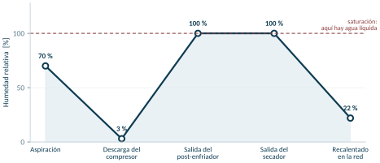
Esa figura resume el bloque entero. El tratamiento consiste en provocar la condensación en el lugar controlado, sacarla, y dejar el aire lo suficientemente seco como para que en ningún punto de la red vuelva a alcanzar la saturación.
El vocabulario del agua
Antes de hablar de equipos hay que fijar tres términos, porque el apunte los usa todo el tiempo y en el parcial se confunden.
Humedad relativa
Es el grado de saturación del aire con vapor de agua a una temperatura dada, expresado en porcentaje. Dice qué tan cerca está el aire de no poder retener más vapor. No dice cuánta agua hay: 100 % de humedad relativa a −20 °C es muchísima menos agua que 50 % a 40 °C.
Punto de rocío
Es la temperatura a la que el aire se satura con vapor de agua. Si la temperatura baja de ahí, se condensa. Es la forma útil de medir cuánta agua hay, porque es una temperatura y se compara directamente con la temperatura de la instalación.
Punto de rocío a presión, PRP
Es el punto de rocío del aire a la presión de trabajo. Es el que importa en aire comprimido, porque la red está a presión y lo que uno quiere saber es si en la cañería, a 8 bar y a la temperatura que haga, va a haber agua líquida o no.
ℹ Por qué el PRP cambia con la presión
Si comprimís el aire sin sacarle nada de agua, la cantidad de vapor por kilo de aire seco no cambia, pero la presión parcial del vapor sube en la misma proporción que la presión total. Una presión parcial más alta se satura a una temperatura más alta. Entonces comprimir sube el punto de rocío aunque no hayas agregado una sola gota de agua.
Al revés: si expandís el aire a la atmósfera, la presión parcial del vapor cae y el punto de rocío baja. Por eso un mismo aire, medido a 7 bar, tiene un punto de rocío mucho más alto que medido en atmósfera.
El apunte da el ejemplo directo: un PRP de +2 °C a 7 bar equivale a −25 °C a presión atmosférica, y un PRP de +2 °C a 3 bar equivale a −15 °C atmosféricos.
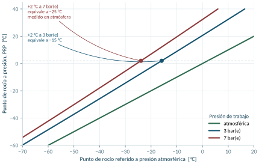
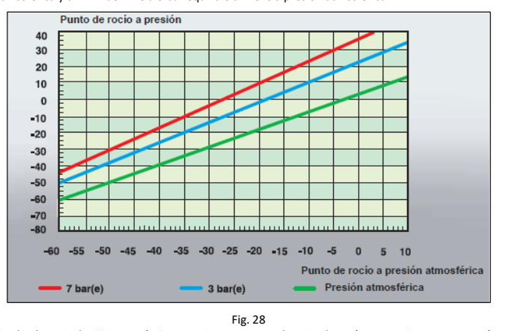
⚠ Error frecuente
Comparar dos secadores usando puntos de rocío referidos a presiones distintas. Un secador que promete “−25 °C” medidos en atmósfera y otro que promete “+2 °C a 7 bar” están ofreciendo exactamente lo mismo. El apunte lo dice explícitamente: el punto de rocío atmosférico no se puede comparar con el PRP al cotejar secadores diferentes.
Conversor de punto de rocío
Poné el PRP y la presión de trabajo y te devuelve el punto de rocío equivalente medido en atmósfera. Sirve para comprobar los dos ejemplos del apunte.
El apunte lee estos valores sobre el gráfico de la Fig. 28, así que puede haber un grado de diferencia con el cálculo.
El criterio económico
Cuanto menor sea el punto de rocío necesario, mayores son los costos de inversión y de operación del secador. No se especifica el aire más seco posible: se especifica el aire que la aplicación necesita, y ni un grado menos. La norma que ordena esa decisión es la ISO 8573-1 que viste en el bloque 0.
Refrigerador posterior (post-enfriador)
Es un intercambiador de calor que enfría el aire comprimido caliente que sale del compresor, para precipitar el agua que, si no, se condensaría en las tuberías. Va inmediatamente después del compresor, y viene dotado generalmente de un separador de humedad con purga automática.
La lógica de ubicarlo ahí es la de la cadena causal: el aire se va a enfriar en algún lado. Si lo enfriás vos, en un equipo con separador y purga, el agua sale por un caño de desagote. Si lo dejás enfriar solo en la red, el agua aparece dentro de las cañerías, moja los consumos y oxida todo desde adentro.
ℹ Los tres números del post-enfriador
- La temperatura de salida es aproximadamente 10 °C por encima de la temperatura del refrigerante, aunque varía según el tipo de refrigerador.
- Elimina entre el 80 y el 90 % del agua de condensación.
- Se usa prácticamente en todas las instalaciones estacionarias. Los compresores modernos lo llevan integrado de fábrica.
Los dos tipos, según el refrigerante
Se clasifican por el fluido que hace el enfriamiento:
- Agua-aire: el refrigerante es agua. Da temperaturas de salida más bajas y más estables, porque el agua de red no depende de la temperatura del día. Es el que aparece en las Fig. 29 a 31.
- Aire-aire: el refrigerante es el aire atmosférico, movido por un ventilador. Más simple, sin consumo de agua, pero la temperatura de salida queda atada a la temperatura ambiente, y en verano eso se nota.
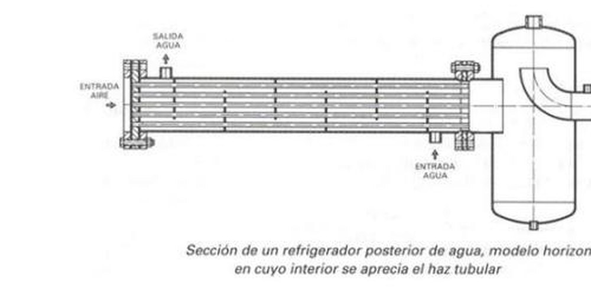
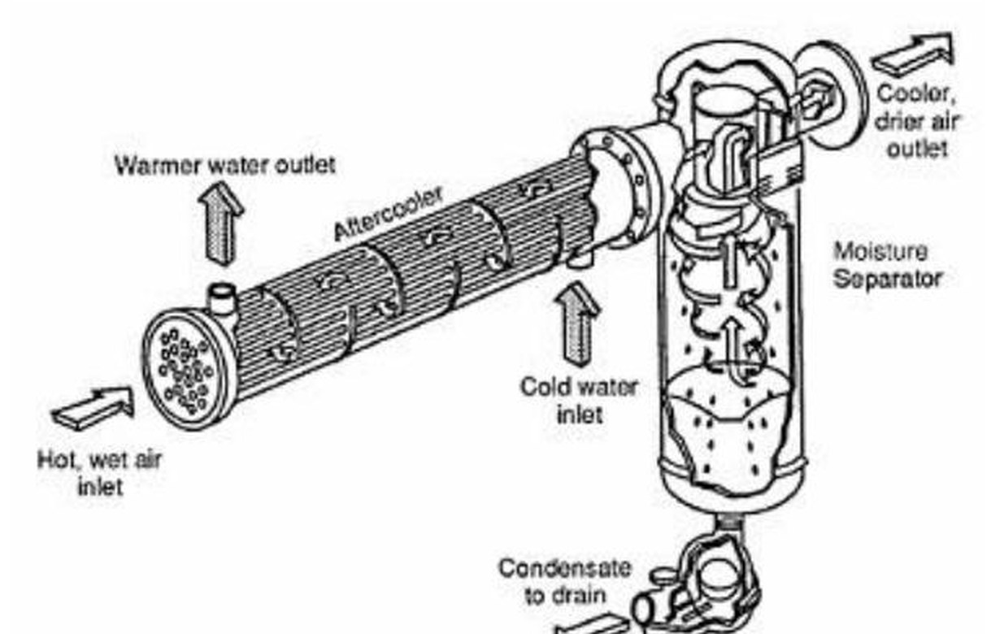
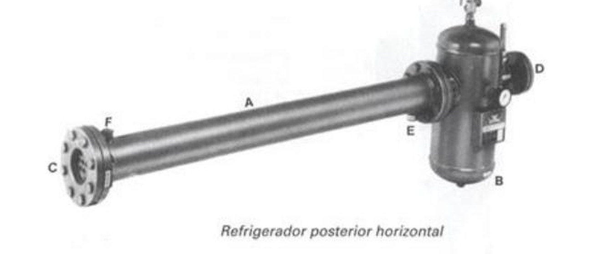
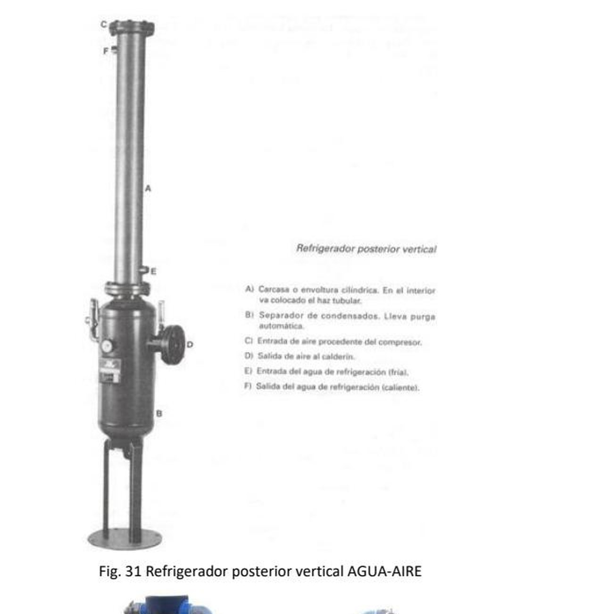
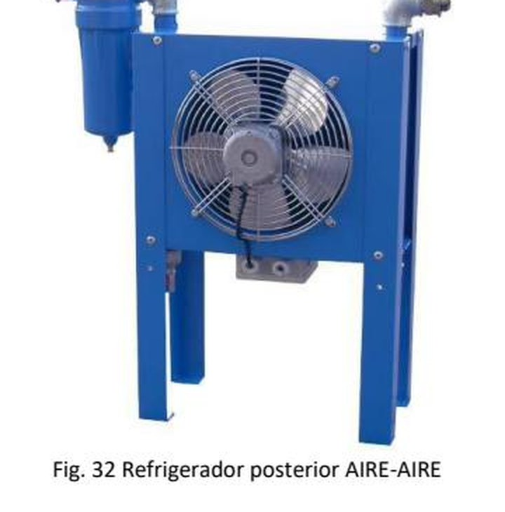
Cuánta agua saca realmente
Conviene ver el número con un caso concreto, porque el 80 a 90 % del apunte depende bastante de a qué temperatura logres enfriar.
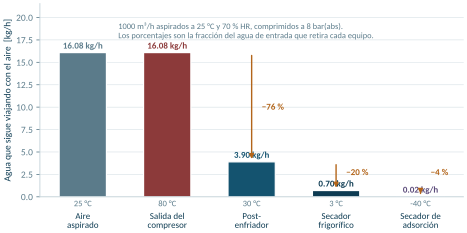
Con ese caso, un post-enfriador que entregue el aire a 30 °C retira el 76 % del agua. Si el agua de refrigeración es fría y la salida queda en 25 °C, sube al 82 %. Si es un aire-aire trabajando un día de verano y la salida queda en 40 °C, baja al 58 %. Ahí está el rango del apunte y también el motivo por el que el número se mueve.
◆ Cuidado con lo que dice el apunte
El “80 a 90 % del agua de condensación” es un valor típico, no una constante del equipo. Sale de suponer un post-enfriador con agua de refrigeración razonablemente fría. Con un aire-aire en verano el rendimiento cae bastante, y eso no significa que el equipo esté mal: significa que la temperatura de salida quedó alta porque el ambiente estaba caliente. Si en el parcial te piden el número, dá el del apunte, pero si te piden justificarlo, la variable de la que depende es la temperatura de salida.
⚠ Error frecuente
Decir que el post-enfriador “seca el aire”. No lo seca: lo enfría y le saca el agua que sobra a esa temperatura. El aire sale del post-enfriador saturado, con 100 % de humedad relativa a la temperatura de salida. Cualquier enfriamiento posterior, aunque sea de un par de grados en un tramo de cañería que pasa a la sombra, vuelve a condensar. Por eso después del post-enfriador hace falta un secador, y no son equipos redundantes.
Secado del aire comprimido
El aire atmosférico contiene vapor de agua, más cuanto más alta es la temperatura. Cuando se comprime, aumenta la concentración de agua. Para evitar la precipitación de agua en las tuberías y en los equipos conectados, el aire comprimido se debe secar.
Existen cinco técnicas para eliminar la humedad del aire comprimido: refrigeración, absorción, adsorción, sobrecompresión y membrana. Las cinco terminan en lo mismo, que es fijar un punto de rocío a presión, pero lo consiguen por caminos físicos distintos y cuestan cosas muy distintas.
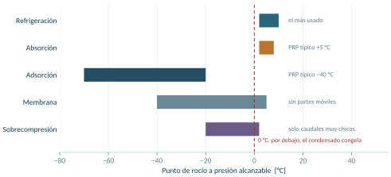
4.1 Secador frigorífico
Es el que más se usa. El aire comprimido se enfría, con lo cual se condensa una gran cantidad de agua que se puede separar. Después el aire comprimido se vuelve a calentar hasta aproximadamente la temperatura ambiente, para que no se forme condensación en el exterior de las tuberías. Estos equipos pueden usarse a diferentes presiones y no consumen aire comprimido procesado.
Se utilizan para puntos de rocío de entre +2 °C y +10 °C, y tienen un límite inferior claro: el punto de congelación del agua de condensado. Por debajo de 0 °C el agua que se separó se convierte en hielo dentro del intercambiador y lo tapa.
ℹ Para qué sirve el recalentamiento de la salida
El aire sale del intercambiador frío y saturado. Si entrara así a la red, la cañería quedaría más fría que el ambiente y transpiraría por afuera, como un vaso de agua helada. Recalentándolo hasta cerca de la temperatura ambiente se evita eso, y de paso la humedad relativa cae, porque el contenido de agua ya no cambia pero la capacidad del aire sube.
El truco es que ese recalentamiento sale gratis: se hace en el intercambiador aire/aire de la entrada, con el aire caliente que está entrando. Con el mismo equipo se precalienta la salida y se preenfría la entrada, y el circuito de refrigerante tiene que hacer menos trabajo.
Los tipos que hay en el mercado
- De expansión directa. Se subdividen en tres: los no cíclicos de velocidad fija, que funcionan de forma continua con independencia de la carga; los cíclicos de velocidad fija, que se detienen cuando desciende la carga para ahorrar energía y vuelven a arrancar cuando es necesario; y los de velocidad variable, que ofrecen la máxima eficiencia energética porque varían automáticamente la velocidad del compresor de refrigerante para adaptarse a la carga.
- De masa térmica. Tienen un intercambiador que contiene una masa térmica líquida para almacenar la energía fría. Se detienen cuando hay poco aire o cuando desciende la carga.
- Scroll digitales. Tienen un compresor de refrigerante tipo scroll que carga o descarga según la demanda. Son de alta eficiencia energética.
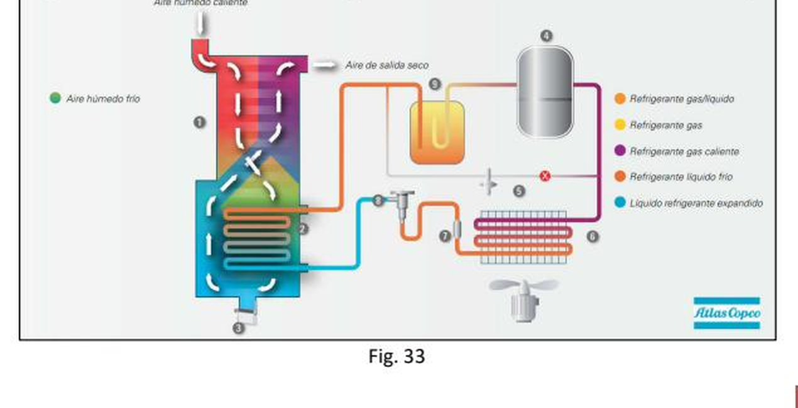
| N.º | Componente | Qué hace |
|---|---|---|
| Circuito de aire | ||
| 1 | Intercambiador aire/aire | El aire de entrada es enfriado por el aire seco y frío de salida. Es el que recupera energía en las dos direcciones. |
| 2 | Intercambiador aire-refrigerante | El aire es enfriado por el circuito de refrigerante hasta el punto de rocío deseado. El vapor de agua se condensa en gotitas. |
| 3 | Separador de agua integrado | La humedad se recoge y se evacúa por un purgador electrónico. |
| Circuito de refrigerante | ||
| 4 | Compresor de refrigerante | Comprime el gas refrigerante a una presión mayor. |
| 5 | Dispositivo de regulación | La válvula de derivación de gas caliente regula el secador para evitar la congelación en condiciones de baja carga. |
| 6 | Condensador de refrigerante | Enfría el gas refrigerante para que pase de gas a líquido. |
| 7 | Filtro de refrigerante | Protege al dispositivo de expansión contra partículas dañinas. |
| 8 | Válvula de expansión termostática | La expansión reduce la presión y sigue enfriando el refrigerante. |
| 9 | Separador de líquido | Garantiza que al compresor sólo pueda entrar gas refrigerante. |
Por qué existe la válvula de gas caliente
Es el componente 5 y es el que más se pregunta, porque su motivo no es obvio. El circuito de refrigerante está dimensionado para el caudal nominal de aire. Si la demanda baja y por el secador pasa poco aire, el evaporador sigue teniendo la misma potencia frigorífica pero mucha menos carga térmica que sacar, así que se enfría de más y el condensado congela. La válvula deriva gas caliente al evaporador para sostener la temperatura por encima de 0 °C. Es un regulador de carga parcial, no un elemento de seguridad.
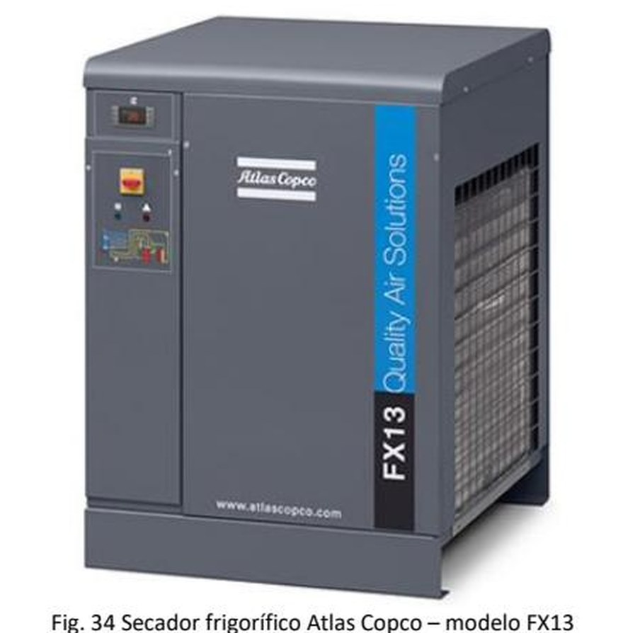
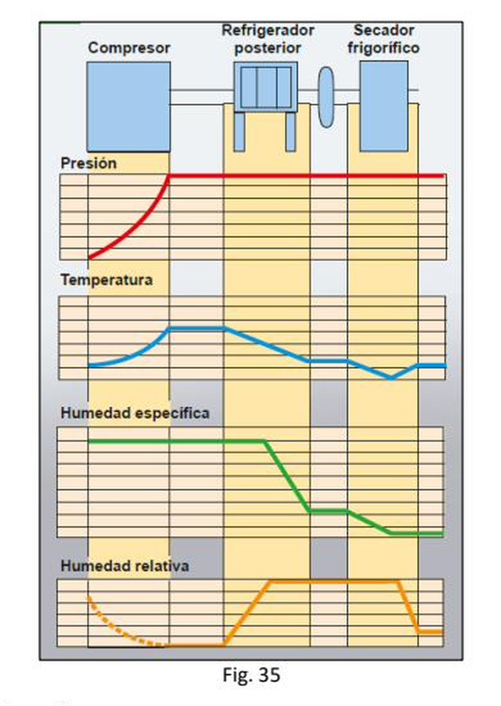
⚠ Error frecuente
Pensar que el secador “extrae el vapor de agua” del aire. Ni el frigorífico ni ninguno por refrigeración hacen eso. Lo que hacen es enfriar hasta el PRP que se quiere y condensar todo lo que sobra a esa temperatura. El aire sale saturado a esa temperatura, con 100 % de humedad relativa. La garantía que da el equipo no es “aire sin agua”, es “aire que no va a condensar mientras no lo enfríes por debajo del PRP”.
4.2 Secador por absorción
Es un proceso químico. El aire circula a través de un agente secante, yeso o cloruro de magnesio, que reacciona químicamente con la humedad y forma una solución que se drena al fondo del depósito. Es de bajo costo y el PRP típico que se alcanza es +5 °C.
El agente se consume en la reacción, así que hay que reponerlo periódicamente. No se regenera: se gasta.
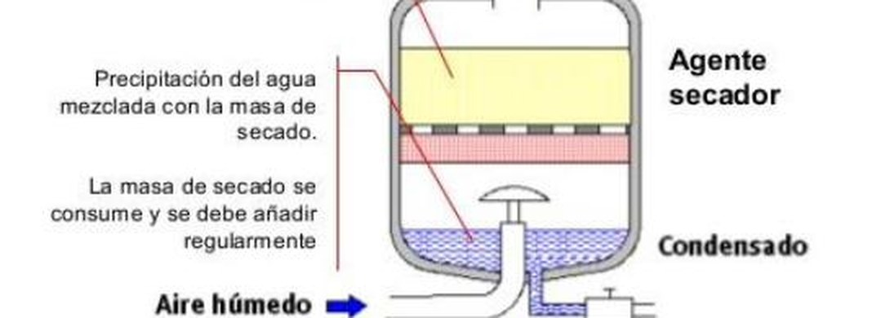
⚠ Error frecuente: absorción no es adsorción
Las dos palabras se diferencian en una letra y describen fenómenos distintos.
- Absorción: el agua entra en la masa del material y reacciona con él. Es química. El material se consume y hay que reponerlo.
- Adsorción: el agua se pega a la superficie del material sin reaccionar. Es física. El material no se consume, se satura, y se regenera.
Regla para acordarse: ab-sorción, el agua se absorbe hacia adentro; ad-sorción, el agua se queda adherida afuera.
4.3 Secador por adsorción
El principio es simple: el aire húmedo fluye sobre un material higroscópico (silicagel, tamices moleculares, alúmina activada) y se seca. Es un proceso físico.
El vapor de agua pasa del aire comprimido al material higroscópico o desecante, que se satura gradualmente con el agua adsorbida. Por eso el desecante se debe regenerar periódicamente para recuperar su capacidad de secado. Los secadores de adsorción constan generalmente de dos torres: la primera seca el aire comprimido de entrada mientras la segunda se regenera, y alternan la función cuando la que se estaba regenerando termina.
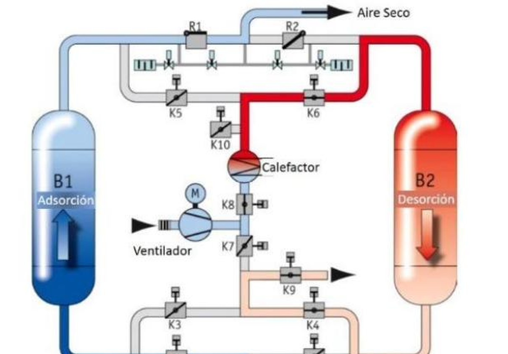
Las cuatro formas de regenerar el desecante
El método de regeneración es lo que define el tipo de secador de adsorción. Los más eficientes energéticamente suelen ser más complejos y por tanto más caros.
| Tipo | Cómo regenera | Aire de purga | Energía |
|---|---|---|---|
| Regenerado por purga o “regenerado en frío” | Con aire comprimido expandido. Es el más adecuado para caudales de aire pequeños. | 15 a 20 % de la capacidad nominal, a 7 bar(M) | referencia |
| Purga caliente | Calienta el aire de purga expandido con un calentador eléctrico, y así necesita menos caudal de purga. | ≈ 8 % | −25 % |
| Regenerado por soplante | El aire ambiente pasa sobre un calentador eléctrico y toma contacto con el desecante húmedo. No usa aire comprimido. | no usa | −40 % |
| HOC reactivado por el calor de compresión | Usa el calor disponible del compresor en vez de evacuarlo en el refrigerador posterior. | no usa | PRP de −20 °C sin agregar energía |
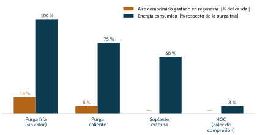
El PRP típico que se alcanza por adsorción es de −40 °C, lo que hace a estos equipos idóneos para aire muy seco en aplicaciones críticas. El apunte agrega un dato de consumo: un secador de adsorción con una capacidad de 1000 l/s requiere sólo 120 W.
◆ Cuidado con lo que dice el apunte
Los 120 W para 1000 l/s aparecen justo después del párrafo del HOC, y hay que leerlos ahí: es el consumo eléctrico auxiliar de un secador que se regenera con calor que el compresor ya produjo. No es el costo energético total de secar. En un secador regenerado por purga fría el costo real no es eléctrico, es el 15 a 20 % del caudal de aire comprimido que se tira, y ese aire ya costó energía de compresión. Si en el parcial te piden comparar consumos, la comparación honesta es la de la tabla de arriba, no la de los 120 W.
Qué necesita antes y qué necesita después
El apunte es explícito y esto entra siempre:
- A la entrada del secador de adsorción se debe disponer siempre de un sistema que garantice la separación y el drenaje del agua condensada. El agua líquida arruina el desecante.
- Si el aire se produjo con compresores lubricados con aceite, hay que instalar un filtro coalescente antes del secador. El aceite tapa los poros del desecante y no se va con la regeneración.
- En la mayoría de los casos hace falta un filtro de partículas a la salida, porque el desecante se va desgranando y suelta polvo a la corriente de aire.
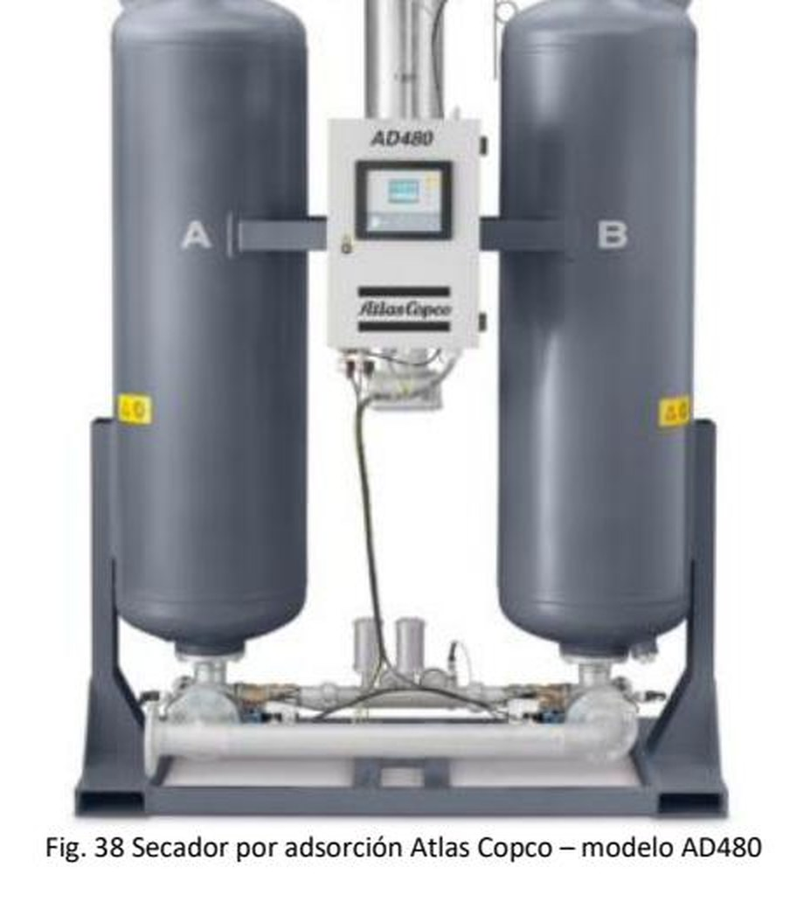
4.4 Sobrecompresión
Es quizás el método más sencillo. El aire se comprime primero a una presión mayor que la presión de trabajo prevista, lo cual hace que aumente la concentración de vapor de agua. Después el aire se enfría y como resultado se separa el agua. Finalmente se permite que el aire se expanda hasta la presión de trabajo, y se obtiene un punto de rocío a presión más bajo.
ℹ Por qué funciona
Es la lógica de la sección "El vocabulario del agua" aplicada al revés. Comprimir de más sube la presión parcial del vapor, con lo cual el aire se satura a una temperatura más alta y con el mismo enfriamiento se logra sacar más agua. Después, al expandir hasta la presión de trabajo, la presión parcial del vapor que quedó cae en la misma proporción, y con ella cae el punto de rocío.
El precio es evidente: estás comprimiendo a una presión que no necesitás sólo para tirar la diferencia. Por eso sólo resulta adecuado para caudales de aire muy pequeños, debido a su elevado consumo de energía.
4.5 Secador de membrana
Utiliza la permeabilidad selectiva de miles de diminutas fibras huecas de polímero con un revestimiento interior. Esas fibras dejan pasar el vapor de agua y no el aire.
A medida que el aire comprimido filtrado y húmedo entra en el cilindro, el recubrimiento de la membrana permite que el vapor de agua penetre y se deposite entre las fibras, mientras el aire seco continúa su trayectoria casi a la misma presión que el aire húmedo de entrada. El agua separada se libera a la atmósfera.
La permeación se produce por la diferencia de presión parcial del gas entre el interior y el exterior de la fibra hueca. Esa es la fuerza impulsora: no hay bomba ni frío, hay un desequilibrio de presiones parciales que empuja el vapor hacia afuera.
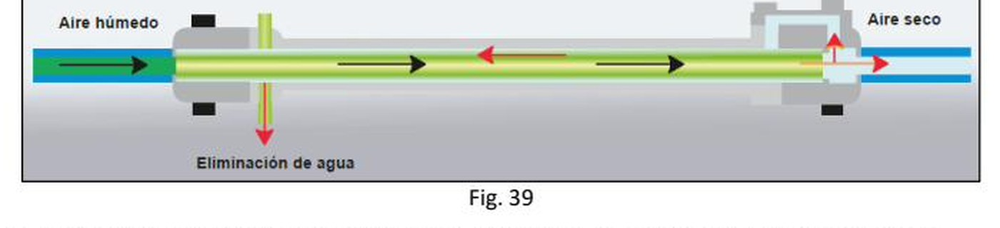
Son fáciles de usar, silenciosos, no tienen piezas móviles, consumen poca energía y requieren un mantenimiento mínimo, que consiste principalmente en los filtros aguas arriba del secador. Además de eliminar el agua, con una membrana se pueden separar componentes de un gas según el material de la fibra: la separación se logra por las diferencias de tamaño molecular y de solubilidad del gas en la membrana.
4.6 Las cinco, una al lado de la otra
| Técnica | Naturaleza del proceso | PRP típico | Dónde conviene |
|---|---|---|---|
| Refrigeración | Físico: enfría y condensa | +2 a +10 °C | El caso general de la industria. No consume aire procesado. |
| Absorción | Químico: el agente se consume | +5 °C | Instalaciones chicas y de bajo costo inicial. |
| Adsorción | Físico: el desecante se regenera | −40 °C | Aplicaciones críticas que exigen aire muy seco. |
| Sobrecompresión | Físico: comprime de más y expande | bajo, según cuánto sobrecomprima | Sólo caudales muy pequeños. Consumo de energía elevado. |
| Membrana | Físico: permeabilidad selectiva | bajo, sin partes móviles | Caudales chicos, uso intermitente, lugares sin mantenimiento. |
Balance de agua de una instalación
Movete los valores y mirá cómo se reparte el agua entre el post-enfriador y el secador. Es el mismo cálculo del gráfico de la sección "Refrigerador posterior", con tus números.
Filtrado del aire comprimido
Sacarle el agua al aire no lo deja limpio. En el aire comprimido se encuentran tres contaminantes principales, y cada uno se saca con un mecanismo distinto.
5.1 Los tres contaminantes
| Contaminante | Qué es | De dónde viene |
|---|---|---|
| Partículas | Pequeños trozos de material sólido. | Polvo, suciedad o polen del aire ambiente, y partículas metálicas sueltas que pueden provenir de la corrosión de las tuberías. |
| Aerosoles | Pequeñas gotas de líquido en suspensión. | Sobre todo del lubricante, en instalaciones con compresores de inyección de aceite. |
| Vapores | Lubricantes y cualquier otro líquido que se haya convertido en gas. | Del aceite del compresor, evaporado por la temperatura de compresión. |
La distinción entre aerosol y vapor parece un detalle y es la clave de toda la sección: un aerosol es líquido y se puede atrapar; un vapor es gas y hay que adsorberlo. Un filtro coalescente, por bueno que sea, no saca vapores.
5.2 Extracción de partículas secas
Se utilizan tres mecanismos principales para eliminar partículas sólidas de todos los tamaños. En los tres, el resultado es que la partícula queda adherida a las fibras del elemento filtrante. Lo que cambia es cómo llega hasta la fibra, y eso depende del tamaño.
Impacto, para partículas de 2 µm o superiores
Una partícula que viaja en un gas tiene su propio impulso, y a mayor masa o velocidad, mayor impulso. Ante los cambios de dirección de la corriente de gas, la partícula tiende a seguir su dirección inicial, por lo que impacta y queda atrapada entre las fibras del filtro. Cuanto más grandes sean las partículas, más fácil será separarlas.
Intercepción, entre 0,2 y 2 µm
Las partículas más pequeñas ya no tienen inercia suficiente y siguen la corriente de aire. Pero si el diámetro de la partícula es mayor que los poros del material del filtro, quedan atrapadas igual. Es un mecanismo puramente geométrico: la partícula pasa donde no entra.
Difusión, para partículas menores a 0,2 µm
Se produce cuando las partículas pequeñas se mueven erráticamente por toda la superficie, en lugar de seguir la corriente de aire comprimido. Colisionan con las moléculas de gas, lo que retrasa su paso por el filtro. Como pueden moverse con libertad, es mucho más fácil y más probable que sean interceptadas por los materiales del filtro y retiradas de la corriente.
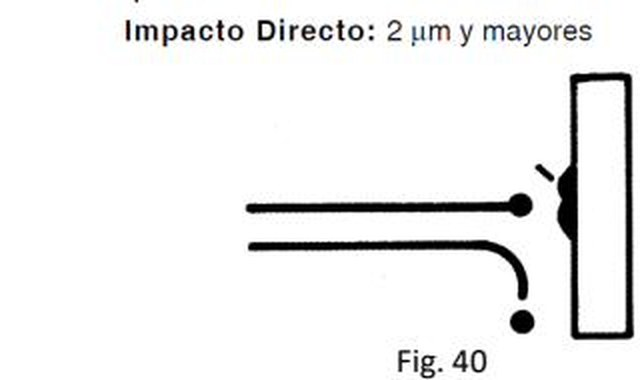
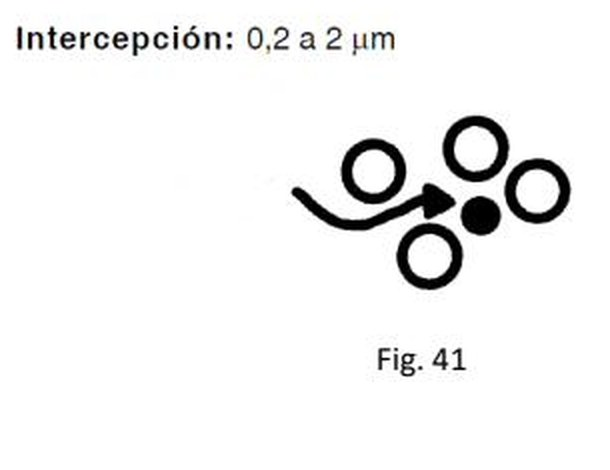
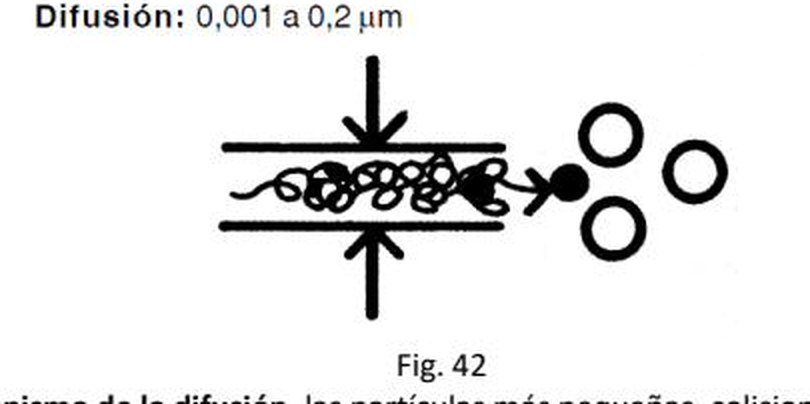
ℹ Por qué hay un tamaño que cuesta más filtrar
La capacidad de separación de un filtro es el resultado de los tres procesos juntos. Y los tres empeoran hacia el mismo lado: el impacto necesita inercia y se cae cuando la partícula es chica; la difusión necesita agitación térmica y se cae cuando la partícula es grande. En el medio hay una franja donde la partícula ya es demasiado chica para tener inercia y todavía demasiado grande para moverse erráticamente.
Esa franja es la de 0,1 a 0,2 µm, y es el tamaño de partícula más penetrante. El apunte lo dice sin rodeos: en realidad no hay un filtro que sea efectivo para todo el rango de tamaños, e incluso el efecto de la velocidad del flujo no es un factor decisivo para la capacidad de separación.
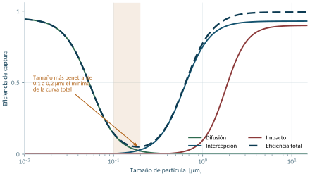
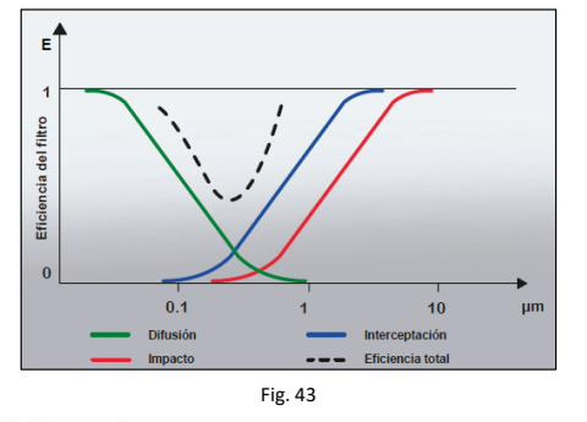
5.3 Extracción de aerosoles y vapores
Se emplean dos tipos de filtros: los coalescentes para eliminar gotas de líquido, es decir aerosoles, así como algunas partículas, y los filtros de vapor, que emplean la adsorción.
Coalescencia
El proceso consiste en unir pequeñas gotas de líquido para formar gotas grandes. Cuando las gotas aumentan de tamaño, caen del filtro a un colector de humedad, lo que produce una corriente de aire comprimido más limpio y seco. Los filtros coalescentes eliminan aerosoles y partículas, pero no son eficaces para eliminar vapores.
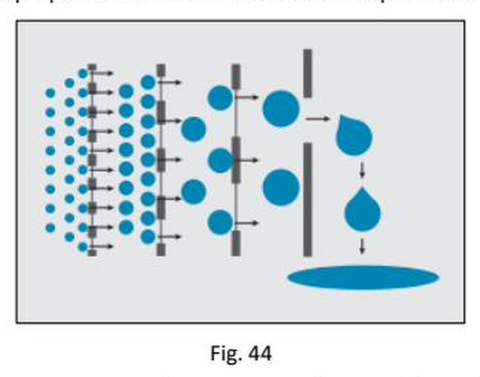
Adsorción
Es un proceso químico que se utiliza para eliminar lubricantes gaseosos o vapores. Los vapores se pegan a la superficie de los materiales adsorbentes, como el carbón vegetal activado, que se usa comúnmente por su gran superficie y por su atracción por los vapores de aceite.
Dos consecuencias prácticas, que entran las dos:
- Como los vapores de aceite cubren la superficie del carbón a lo largo del tiempo, es esencial cambiarlo antes de que esté completamente saturado. Si no, entra aceite al sistema de aire.
- Es necesario utilizar un filtro de polvo después del filtro de carbón activado, porque podrían fugarse pequeñas partículas de carbón y entrar en la corriente de aire.
5.4 Tipos de filtros según la aplicación
| Tipo | Para qué | Números del apunte |
|---|---|---|
| De partículas | Retener sólidos como el óxido de la tubería, arrastrados por el aire a lo largo de las cañerías. | El parámetro característico es la amplitud de los poros, que determina el tamaño mínimo de partícula retenida. |
| De carbón activo | Eliminar vapores y olores de aceite. No los eliminan completamente, pero el residuo es muy pequeño. | Residuo medio de 0,003 mg/m³. |
| Coalescentes | Eliminar partículas submicrónicas o nieblas de aceite y agua menores a 2 µm. Los filtros comunes no llegan: capturan partículas mayores a 2 µm. | Eficiencia del 99,97 % entre 0,3 y 0,6 µm. Reducen de 20 ppm a 0,004 ppm. |
| Catalizadores | Sistemas de respiración humana, para eliminar el monóxido de carbono. | Eliminación de CO. |
| Bactericidas | Aplicaciones medicinales y laboratorios, para eliminar determinadas bacterias. | Requieren esterilización periódica con vapor o autoclave. Vida útil muy corta, dada por el número máximo de esterilizaciones admitidas. |
5.5 Clasificación por ubicación en la red
Pre-filtros
Los primeros después de los compresores. Eliminan las partículas gruesas y protegen a toda la red de filtrado que viene después. Suelen ofrecerse con capacidad coalescente. Filtrado superior a 1 µm y 1 mg/m³ de aceite.
Filtros intermedios
Van a continuación de los pre-filtros. Protegen los accesorios y equipos instalados en la red. Sus características se determinan en función de la calidad de aire requerida.
Filtros finales
Todos los filtros específicos de protección del sistema antes de su uso final.
◆ Cuidado con lo que dice el apunte
Sobre los pre-filtros, el texto dice que su misión es eliminar las partículas gruesas “que podrían ser aspiradas por el compresor”, pero al mismo tiempo los ubica después de los compresores. Las dos cosas no pueden ser ciertas a la vez: si el filtro está después, ya no puede evitar que el compresor aspire nada.
Lo que hace un pre-filtro en esa posición es retener lo que el compresor efectivamente aspiró, más lo que el propio compresor aportó. El filtro que protege la aspiración es otro, es el filtro de aire de admisión, y en el apunte aparece listado aparte cuando enumera los componentes de la producción. Si te preguntan por la función del pre-filtro, la respuesta segura es la segunda mitad de la definición: es el filtro protector de la red de filtrado que se instale a continuación.
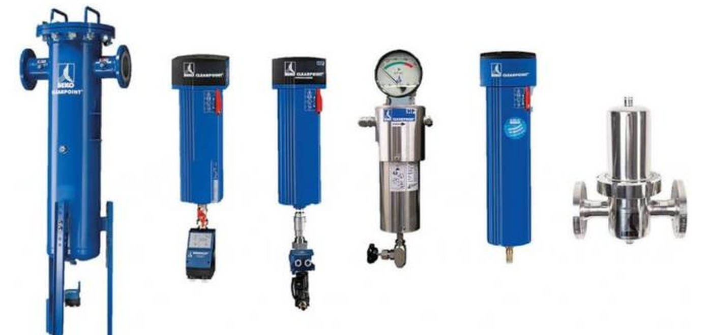
5.6 Partes constitutivas de un filtro
La estructura de los filtros es muy similar entre fabricantes. Lo que cambia es principalmente el diseño interno, para mejorar las pérdidas de carga, la calidad de los materiales del elemento filtrante, el grado de eficiencia y el diseño del propio elemento.
| N.º | Parte | Qué hay que saber |
|---|---|---|
| 1 | El cuerpo | Suele ser de fundición de aluminio o de plástico, y también se fabrica en acero y en ejecuciones especiales de acero inoxidable. Está dividido en dos partes: la superior incluye las conexiones a la tubería y la inferior es desmontable para poder cambiar el elemento filtrante. |
| 2 | Elemento filtrante | Es la parte clave del filtro. Según su diseño podrá usarse para diferentes trabajos. Es muy importante conocer su eficiencia, el tamaño de partículas y su capacidad. |
| 3 | Sistema de purga del condensado | En la figura se ve una purga interna de boya, que actúa por flotación sobre el condensado acumulado en la parte inferior. También se suministran con purgas electrónicas, capacitivas o manuales. |
| 4 | Manómetro de presión diferencial | Indica el nivel de suciedad del elemento filtrante. Hay modelos con contactos libres de tensión para alarmas o con transmisión del valor por señal de 4 a 20 mA. |
| 5 | Sistema de conexión modular | Útil cuando en una misma instalación se juntan dos tipos de filtros diferentes. Facilita el montaje y reduce las pérdidas de carga. |
| 6 | Indicador de nivel de líquido | Sirve para ver si el sistema de purga está funcionando correctamente. |
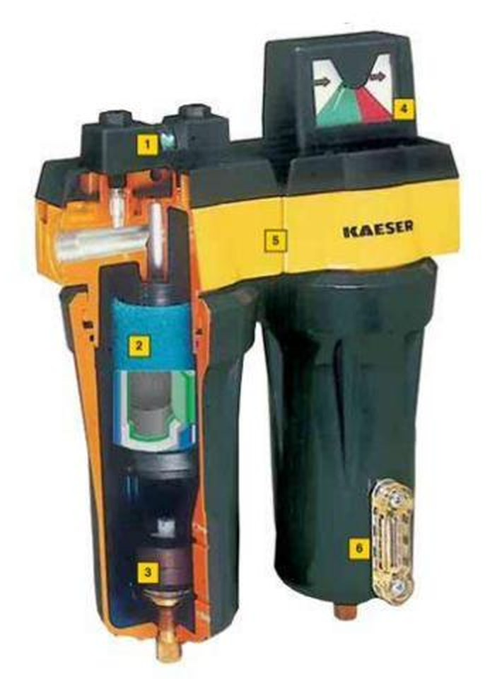
ℹ Por qué el manómetro diferencial no es un accesorio decorativo
Un elemento filtrante se ensucia y su pérdida de carga aumenta. Esa pérdida de carga es presión que el compresor tuvo que generar y que el consumo nunca ve, así que se paga en energía todos los días. El manómetro diferencial es el que dice cuándo el elemento dejó de convenir: no se cambia cuando se rompe, se cambia cuando el Δp que provoca cuesta más que el repuesto.
El otro extremo también existe. Un elemento que se pasa de tiempo termina dejando pasar lo que debía retener, o directamente rompiéndose, y entonces el filtro deja de proteger a lo que estaba protegiendo.
⚠ Error frecuente
Mezclar los tres tipos de filtro. Conviene fijarlo así: el coalescente junta gotas, así que saca aerosoles y algo de partículas, y no saca vapores. El de carbón activo adsorbe, así que saca vapores de aceite, y no está pensado para partículas ni para gotas. El de partículas retiene sólidos y nada más. Por eso no se elige un filtro, se arma una secuencia.
El orden del tren
Todo lo anterior son equipos sueltos. Lo que se pregunta después es en qué orden van, y ese orden no es arbitrario: cada posición se justifica con lo que dice el apunte de cada equipo.
| Orden | Equipo | Por qué va ahí |
|---|---|---|
| 1 | Compresor | Es el origen. Entrega aire caliente, a presión y sucio. |
| 2 | Refrigerador posterior con separador y purga | Inmediatamente después del compresor, para que el agua condense donde hay un separador y no dentro de la red. |
| 3 | Depósito o pulmón con purga automática | Compensa la diferencia entre el caudal generado y el consumido. Como el aire llega saturado y en el depósito se enfría un poco más, sigue apareciendo condensado, y por eso lleva purga. |
| 4 | Pre-filtro coalescente | Antes del secador. Le saca los aerosoles de aceite que arruinarían el desecante o ensuciarían el intercambiador. |
| 5 | Secador | Fija el PRP de toda la red aguas abajo. Recibe aire ya frío y ya libre de agua líquida, que es la condición que el apunte exige explícitamente para el de adsorción. |
| 6 | Filtro final | Después del secador. Retiene el polvo del desecante si el secador es de adsorción, y ajusta la calidad a la clase ISO que pide el consumo. Si hay carbón activo, el filtro de polvo va después de él. |
| 7 | Red y consumos | Es el bloque 3 y el bloque 4. |
ℹ Las tres reglas de posición que hay que poder justificar
- El post-enfriador va inmediatamente después del compresor. El apunte lo dice textual. Si lo corrés más lejos, el agua condensa en el tramo intermedio.
- El coalescente va antes del secador de adsorción, siempre que el compresor sea lubricado con aceite, y un separador de agua condensada va antes en todos los casos.
- El filtro de partículas va después del secador de adsorción y después del carbón activo. En los dos casos por lo mismo: el equipo anterior suelta polvo.
✔ Para conectar con lo que ya sabés
Fijate que el tren entero es una sola idea aplicada tres veces. El post-enfriador y el secador frigorífico hacen lo mismo, enfriar hasta una temperatura y sacar lo que condensa, sólo que a temperaturas distintas y por eso a niveles de exigencia distintos. La adsorción y el carbón activo también hacen lo mismo entre sí, pegar moléculas a una superficie, uno con agua y el otro con vapores de aceite. Si te acordás de esos dos pares, la mitad del bloque se reconstruye sola.
Resumen de una carilla
Todo lo que hay que tener en la cabeza al entrar al parcial, en una sola pantalla.
| Tema | Valor |
|---|---|
| Salida del post-enfriador | ≈ 10 °C por encima de la temperatura del refrigerante |
| Agua que retira el post-enfriador | 80 a 90 % del agua de condensación |
| Equivalencia de PRP | +2 °C a 7 bar ≡ −25 °C atmosférico · +2 °C a 3 bar ≡ −15 °C atmosférico |
| Secador frigorífico | PRP de +2 a +10 °C. Límite inferior: congelación del condensado |
| Secador por absorción | PRP típico +5 °C. Agentes: yeso, cloruro de magnesio |
| Secador por adsorción | PRP típico −40 °C. Desecantes: silicagel, tamices moleculares, alúmina activada |
| Regeneración por purga fría | 15 a 20 % de la capacidad nominal, a 7 bar(M) |
| Regeneración por purga caliente | ≈ 8 % de purga, 25 % menos de energía |
| Regeneración por soplante | Sin aire comprimido, 40 % menos de energía |
| Regeneración HOC | PRP de −20 °C sin agregar energía. 1000 l/s con 120 W |
| Mecanismos de captura | Impacto ≥ 2 µm · Intercepción 0,2 a 2 µm · Difusión < 0,2 µm |
| Tamaño más penetrante | 0,1 a 0,2 µm |
| Filtros coalescentes | 99,97 % entre 0,3 y 0,6 µm. De 20 ppm a 0,004 ppm. Nieblas < 2 µm |
| Filtros de carbón activo | Residuo medio 0,003 mg/m³ |
| Pre-filtros | Capacidad superior a 1 µm y 1 mg/m³ de aceite |
| Manómetro diferencial | Señal de 4 a 20 mA |
Lo que te pueden pedir que expliques
- Por qué el aire condensa en el post-enfriador y no durante la compresión.
- Por qué el punto de rocío a presión y el atmosférico no se pueden comparar entre sí.
- Por qué el post-enfriador no reemplaza al secador.
- Las cinco técnicas de secado, con el PRP de cada una.
- La diferencia entre absorción y adsorción, con el destino del material secante en cada caso.
- Las cuatro regeneraciones del desecante y su costo comparado.
- Para qué está la válvula de gas caliente del secador frigorífico.
- Los tres mecanismos de captura de partículas y por qué existe un tamaño más penetrante.
- Qué saca y qué no saca cada tipo de filtro.
- El orden del tren, justificando al menos tres posiciones.
Enfriar
Post-enfriador. Saca el 80 a 90 %. Deja el aire saturado.
Secar
Cinco técnicas. Fijan el PRP. Refrigeración hasta +2 °C, adsorción hasta −40 °C.
Filtrar
Tres contaminantes, tres mecanismos, una secuencia de filtros.
Ordenar
Cada equipo protege al siguiente. El orden es parte del diseño.
Conexión con el bloque 3
Con este bloque el aire ya está a presión, frío, seco a un PRP conocido y limpio a una clase ISO conocida. Lo que falta es llevarlo hasta donde se usa sin arruinar nada de eso.
El bloque 3 arranca en el depósito, que es la tercera caja del tren de arriba, y sigue con las cañerías. Ahí van a aparecer tres cosas que este bloque dejó planteadas y no resolvió: el condensado que se sigue juntando en los puntos bajos de la red y cómo se purga, la pérdida de carga que come la presión que tanto costó generar, y la razón por la que la toma de aire comprimido se hace siempre desde la parte superior de la tubería.
Bloque 2 de la unidad de Aire Comprimido · Instalaciones Industriales · Ing. Luciano Manavella · UTN Facultad Regional Córdoba.
Figuras 28 a 46 del apunte de cátedra, reproducidas con fines de estudio. Los gráficos en color son de elaboración propia sobre los datos del apunte.